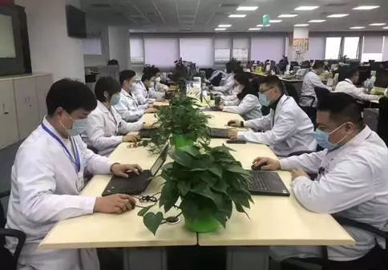
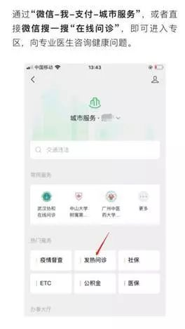
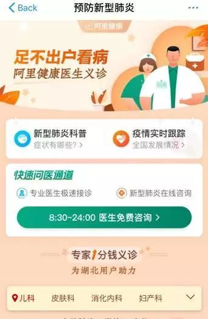

超万名医生线上问诊 补充湖北医疗资源
原文链接 备份链接 【财新网】（记者 宿慧娴）武汉肺炎持续蔓延，截至1月27晚，全国确诊新型冠状病毒感染病例2844例，其中1423例位于湖北省。在湖北当地医疗资源面临超负荷压力之下，阿里健康、平安好医生、微医等多家在线医疗平台的轻问诊 …

线上问诊主要针对轻症患者进行病情初步判断并提供建议，对于重症患者还是建议到线下门诊就医。
文 | 丁 宁 编 辑 | 沈 小 山
21岁的张宁在家已经咳嗽了半个月，走到了发热门诊门口，却因为担心交叉感染，又返回了家。坐立不安时，张宁发现了朋友圈中转载的微医“线上问诊”链接。抱着试试看的态度，张宁将自己的症状在线发给了医生：“夜里咳嗽，没有发烧症状，无武汉旅行史，没有接触肺炎病患。”十分钟后，张宁得到了医生“建议在家观察”的回复意见。而此前，她从未使用过“线上问诊”功能。张宁告诉南都周刊，她每天早起看到新闻中增加的确诊人数数字，都怀疑自己可能有患病的风险。
从武汉读书回家之后的李翔也有着类似的焦虑。李翔说，自己回家已经超过10天了，期间好像有一点感冒发烧，但只有37.3度，也没有咳嗽的症状。体温计不离手，不敢与家人过多交谈，整日考虑是否要去医院，已成为了李翔的日常写照。直到昨天，线上呼吸科医生告诉李翔“建议待在家里，不用害怕，按照这个症状在家里隔离就行”，他才稍微放下心来。
图为受访者提供的线上问诊截图
随着新型冠状病毒感染的肺炎确诊人数激增，不少人陷入了去医院还是在家观察的两难纠结中。“线上问诊”成为了不少人就医的第二条途径。
“线上问诊”是否靠谱？目前有哪些正规平台？应当如何正确使用？
“线上问诊”火爆
弹出消息框、询问病情、回复患者……除夕夜，四川省人民医院呼吸内科主治医师张燕是守着手机过的。最近几天，张燕在网络上不间断地进行义诊，截至1月27日已接诊患者近800名。
刚刚结束一天的线下门诊，27日晚上8点钟，深圳市儿童医院呼吸内科主任徐建强又拿起了手机，开始在线上回复患者的咨询。“问诊的家长都非常焦虑，心理压力很大，我都是在空隙的时间回复家长的问题。”徐建强说。
新型冠状病毒感染的肺炎疫情期间，与张燕、徐建强一样在线上接诊的医生过万名。截至1月28日上午10时，“平安好医生”累计接诊疫情相关问诊94.8万次；截至1月29日上午9时，“微医”平台上共有12775名义诊医生，累计提供了约62万例咨询，平台累计访问量达7千万次。在平台界面的下方，可以看到几乎每分钟都有来自全国各地的医生“持续应援中。”据财新网报道，在多个在线医疗平台上，湖北地区问诊人数持续涌入，最高可达每小时3000人次。
南方医科大学深圳医院耳鼻喉科主任陈向军在接受采访时表示，“各地尤其是武汉地区医疗资源紧张，线上问诊是此次疫情中一个很重要的辅助战场”。

图为“平安好医生”医师正在进行在线问诊
何为“线上问诊”？
“线上问诊”源于互联网背景下的“移动医疗”，又称“非接触式医疗”，与传统医疗方式中医患双方的“接触”相对应。“线上问诊”中的医患双方无需见面，通过文字、图片、语音等方式，在互联网平台上进行非接触性质的信息交流。
目前，由于部分地区就医人数过多，医疗资源承压，武汉协和医院、武汉同济医院、无锡市第三人民医院、四川省人民医院等均在线上针对此次新型冠状病毒感染的肺炎开设“发热门诊”咨询渠道。“阿里健康”“丁香医生”“平安好医生”“好大夫”“微医”、腾讯微信等平台也均提供相关的“线上问诊”服务。
根据2018年国家卫健委发布的《互联网诊疗管理办法》，医疗机构不得对首诊患者开展互联网诊疗活动。因此，目前在线医疗平台提供的大多仅为轻问诊，即提供建议，而非下诊断和开处方。


图为“微医”和“平安好医生”APP的 “线上问诊”平台
如何使用“线上问诊”？
使用“线上门诊”之前，首先要对病情有基础的判断。
根据1月24日《柳叶刀》针对首批41例患者发表的研究显示，新型冠状病毒感染的肺炎患者临床表现有发热（98%，40例），咳嗽（76%，31例）和疲劳（44%，18例）。超过一半的患者还出现呼吸困难（55%，22例），但头痛（8%，3例）和腹泻（3%，1例）少见。
张燕在接受南都周刊采访时表示，只要患者没有流行病学史（即流行病学接触史，在现阶段指在咳嗽、发烧等发病症状两周内存在湖北旅游史，特别是武汉旅游史，或与湖北发热病人有接触史的人）、发热、咳嗽或者是呼吸困难等严重症状，建议在线上咨询后在家休息，时时监测体温即可。
据《西安晚报》，西安交大二附院感染科专家表示：冬春季节本就是呼吸道疾病高发季节，日常生病中经常出现的打喷嚏、流涕症状并不是新型冠状病毒感染的肺炎的常见症状。如果没有武汉接触史，更有可能是普通感冒、流感、支气管炎等。因此，有轻微不适不必扎堆发热门诊，以免导致交叉感染，也给有限的医疗资源增加负担。
深圳市儿童医院呼吸内科主任徐建强在接受南都周刊采访时表示，如果小孩出现了发烧1～2天，但温度不是很高（38.5度以下）的情况下，可以自己在家里多喝水，平衡饮食，多吃含有维生素C的水果、蔬菜之类。但如果发热时间长或出现高热或伴随出现了头痛、全身乏力、精神差等症状，家长要及时带孩子到医院就诊。
完成基本判断后，到哪里寻找正规平台？目前，除了部分医院的公众号开设了线上问诊平台，还有部分医疗平台也专设了“线上问诊”分区。以同济医院为例，可下载“掌上同济”APP,注册后找“在线问诊-发热门诊”进行线上咨询。


1月25日，腾讯微信也开辟了“城市服务-发热门诊”和微信搜一搜“在线问诊”两种方式为患者提供线上咨询服务。截至1月28日，武汉协和医院、绵阳市第三人民医院、韶关市第一人民医院、广州中医药大学金沙洲医院、中山大学附属第七医院、南方医科大学第三附属医院等十余家公立医院自愿接入在线问诊专区。其中，武汉协和医院投入了320名医生进行24小时轮流问诊，一天内接诊了1.2万名患者。宜昌市中心人民医院有200多名医生入驻，在线问诊上线后的四五个小时内，有超过4000名市民进行咨询。
此外，在支付宝界面搜索“问专家”也可以找到新型冠状病毒感染的肺炎问诊专区。

图为支付界面的线上问诊
“由于此次传染病的特殊性，互联网不受场地、时间等要素限制的特性发挥了功能，关于此次疫情的心理救助也可以通过互联网大面积地开展。”国家心理危机干预专家组成员、温州医科大学附属康宁医院精神科主任医师、教授，温州医科大学心理危机干预中心主任唐伟在接受采访时表示，由于线上问诊在信息沟通渠道、信息总量、交流深度、信息准确度等方面都会受限，医务工作者也都是摸着石头过河。
“线上问诊一定程度上可以减少交叉感染的风险，但像咽喉的情况、肺部听诊、血常规化验、病毒核酸筛查等，在线上确实没办法完成。”张燕表示，线上问诊主要针对轻症患者进行病情初步判断并提供建议，对于重症患者还是建议到线下门诊就医。
“线上问诊”是否规范？
在线问诊医生是否都有医师执照？如何确保医生的信息真实可靠？微信相关负责人周豫在接受采访时表示，微信平台上线均为正规公立医院机构，医生均为所属医院的执业医师。“微医”相关负责人告诉南都周刊，参与抗击新型冠状病毒感染的肺炎疫情的医生可在线自主报名，提交医生身份证、执业证、职称证等证照信息。在认证环节，“微医”会对申请者进行人像的活体检测，将活体人像与身份证上的照片比对，确保是申请者本人操作。
但在采访过程中，有患者反映，非呼吸科的医生也在线上回答肺炎症状相关的问题。有些平台前期是AI分诊，回复速度非常快，但机器设定的固定回答偶尔出现答非所问的现象。

图为受访对象提供新冠病毒线上门诊医生简介
对此，武汉协和医院在接受采访时表示，目前，医院快速制定了此次疫情的筛选、救治预防细则，医护人员均经过基础培训后进行线上服务。南方医科大学深圳医院耳鼻喉科主任陈向军则向南都周刊透露，参与“微医”线上问诊的医生建有一个微信群，对于自己拿不准的问题，医生们会在群里相互讨论。“平安好医生”的线上问诊采用“AI＋真人”模式，前端是智能导诊在应答，然后根据具体病情描述分诊给医生解答。
除了物理治疗，“微医”平台还开设了线上心理援助。唐伟表示，此次新型冠状病毒感染的肺炎可能造成的心理问题也不能忽视。目前接诊患者从地域上可以分为湖北省内、省外两种人员，从身体健康状况可以分为无隔离状况、家人在隔离而自己未隔离、自己正在被隔离及自己已被确诊等不同人群。患病症状也分为焦虑、惊恐发作、躯体化障碍、抑郁、睡眠障碍、强迫症、应激性障碍等不同症状。
“线上心理援助无法获知患者的表情、动作、肢体语言及其所处环境的安全状况，恰当的语言交流变得十分重要，如何在线上开始话题、结束话题，都是对医务工作者的巨大考验。线上心理医生还应该具备医学、心理学背景及心理危机干预的实践经验。有些患者需要转介到线下医院，但我们现在联系不到，如果能实现线上、线下的精准对接，就更好了。”唐伟呼吁道。

图为正在进行线上心理救助的唐伟
湖北人陈向军此刻也在深圳进行线上接诊。17年前，他曾在“非典”疫情中奋斗在湖北省十堰市一线。在采访过程中，提到自己正在武汉同济、协和医院“奋战”的百余名同学，他几度哽咽，“武汉第一个牺牲的医生就是我们耳鼻喉科的，我在第二战场随时准备着，冲到前线。”
（文中出现的张宁、李翔均为化名）
来源｜南都周刊
END
欢迎分享到朋友圈，如想取得授权请邮件：newmedia@nbweekly.com。如果想找到小南，可以在后台回复「小南」试试看哦~

文章已于修改
原文链接 备份链接 【财新网】（记者 宿慧娴）武汉肺炎持续蔓延，截至1月27晚，全国确诊新型冠状病毒感染病例2844例，其中1423例位于湖北省。在湖北当地医疗资源面临超负荷压力之下，阿里健康、平安好医生、微医等多家在线医疗平台的轻问诊 …
原文链接 备份链接 2019年3月，武汉协和医院急诊科副主任孙鹏调到该医院的西院，负责急诊科的工作。12月底华南海鲜市场冠状病毒事发，西院开设发热门诊，这两个门诊的工作都落到他头上。今年1月26日上午，孙鹏告诉记者，医院刚接到通知，他们 …
原文链接 备份链接 根据国家卫健委的通报，截至1月23日零点，共统计到国内新型冠状病毒感染的肺炎确诊病例571例，其中超过400例来自湖北。死亡17例，均来自湖北。此刻的武汉面临以下问题：试剂盒数量不够、确诊艰难、床位短缺、高度疑似患者 …
原文链接 备份链接 口述 | 许平 记者 | 王珊 从2019年12月31日到现在，我所在医院的病人越来越多了，以发热门诊为例，目前每天病人的体量已经是医院平常病人数的10多倍，我们医院还在距离市中心比较偏的医院。冬季本身就是流感高发季， …
原文链接 备份链接 ********** *************协和医院发热门诊门口，排队患者人数较多，约为50多人，已经从门诊楼内排到了楼外的人行道上，一旁的输液室则有20多人排队。一位未佩戴口罩的患者进入楼内，立刻有医护人员向其发 …